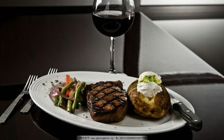
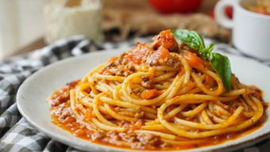
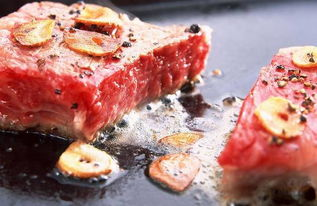
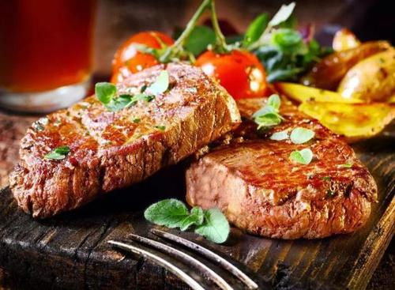
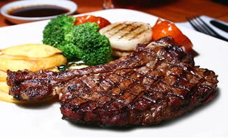
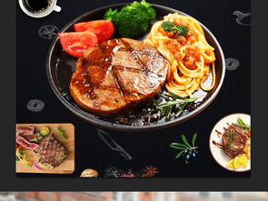

ABOUT关/于/我/们
静觅西餐厅是中国知名的餐饮连锁品牌,其伊始可追溯至1993年。静觅西餐厅作为西餐饮界最早一批“试验者”， 其融合了中国不同地域、民族等饮食特点，再佐以西式餐饮精粹，革故鼎新下将中西风味做到融洽无间， 现已成功开拓出西餐牛排的中式吃法流派。静觅西餐厅专注、严谨的态度经起了时光的考验与食客的体验， “匠心为始，回归食品”的魅力成就了静觅西餐厅中国餐饮的优质品牌形象，使其赢得绝赞口碑，征服国人的味蕾。
-

布局中国之路
足迹遍满中国各大中城市
北起大连，南到海口
东至上海，西接贵阳
全国近500家直营连锁门店
-
包罗万象之味
以西餐为主，融合国人饮食习惯
退出符合膳食结构的各式美食
中西套餐、小菜美点、休闲轻食
乐饮尚品等餐品线全面周到
-
至臻品质之范
业再大，静觅不忘初心
从米饭的松软度到牛排的成熟度
均有一套严格执行的标准
于静觅、品质即生命
-
30年金牌之耀
先后获得超百强荣誉，包括：
“中国百强餐饮企业”
“中国十大西餐品牌”
“中华餐饮名店等”
- 1
- 2
- 3
- 4
- 5
静/觅/西/餐/厅/牛/排/探/索
我们坚持制作原块牛排,采用传统手工腌制。250℃的铁板哲学,锁住营养,只为上桌热气“滋滋声”！
FORD菜/品/展/示
-
菲力牛排
菲力牛排介绍
菲力牛排四个字中的菲力，指的是牛里脊肉(beef tenderloin)。在澳洲，这块肉被称为"眼菲力"，在法国和英国被称为filet和fillet，中文音译菲力。菲力牛排就是用一定厚度的牛里脊肉做出的牛排。
-
法式意面
法式意面介绍
关于意大利面条的起源，有说是源自古罗马，也有的说是由马可·波罗从中国经由西西里岛传至整个欧洲的讲法。 作为意大利面的法定原料，杜兰小麦是最硬质的小麦品种，具有高密度、高蛋白质、高筋度等特点，其制成的意大利面通体呈黄色，耐煮、口感好。
-
惠灵顿牛排
惠灵顿牛排介绍
在西餐当中，凡是名字当中带有“Wellington”的菜，基本上外层都会有一层酥皮，里面是大块的鱼或肉。而惠灵顿牛排（Wellington Steak）名字的真正由来其实是为了纪念滑铁卢战役的英雄“惠灵顿公爵”。因为当初公爵非常喜欢这道菜肴，所以因此命名。而关于惠灵顿牛排做法的由来，其实早在1450年，法国人就发明了“肉派”这种东西，其实大同小异就是用刀将肉剁碎放入起酥中烤制，这便是“惠灵顿牛排”最早的做法。随着时间的推移，这道菜始终受到人们的喜爱，所以也一直流传至今。
-
肉眼牛排
肉眼牛排介绍
肉眼牛排是从近肋骨末端的一少部分切下来，该处肉质柔嫩且多汁(有雪花纹)，滋味无穷。肉眼牛排一般指取自牛身中间的无骨部分，[眼] 是指肌肉的圆形横切面，由于这个部分的肌肉不会经常活动，所以肉质十分柔软、多汁，并且均匀地布满雪花纹脂肪。市场上多称其为眼肉牛排，是一种错误的称谓。
-
黑椒牛排
黑椒牛排介绍
黑椒牛排是一道西餐，主要食材是牛排和黑胡椒，主要烹饪工艺是煎。牛排营养丰富，有补中益气、滋养脾胃、强健筋骨、化痰息风、止渴止涎的功效。牛肉 味甘，性平，归脾、胃经，有补中益气、滋养脾胃、强健筋骨、化痰息风、止渴止涎的功效，适用于中气下陷、气短体虚，筋骨酸软、贫血久病及面黄目眩之人食用。
-
西冷牛排
西冷牛排介绍
冷牛排(Sirloin)，主要是由上腰部的脊肉构成，西冷牛排按质量的不同又可分为小块西冷牛排(entrecte)和大块西冷牛排(sirloin steak)。事实上Sirloin是法语Sur(上)和Loin(柳肉)合成的词，即牛柳上方的肉。每份都在250-300克左右。西冷(Sir loin)即下腰肉，也被称为纽约客，因牛上腰部运动量较菲力沙朗多，故此部位肉质较粗一点。